Powers and logarithms¶
Nth roots¶
sqrt()¶
- mpmath.sqrt(x, **kwargs)¶
sqrt(x) gives the principal square root of
 ,
,  .
For positive real numbers, the principal root is simply the
positive square root. For arbitrary complex numbers, the principal
square root is defined to satisfy
.
For positive real numbers, the principal root is simply the
positive square root. For arbitrary complex numbers, the principal
square root is defined to satisfy  .
The function thus has a branch cut along the negative half real axis.
.
The function thus has a branch cut along the negative half real axis.For all mpmath numbers x, calling sqrt(x) is equivalent to performing x**0.5.
Examples
Basic examples and limits:
>>> from mpmath import * >>> mp.dps = 15; mp.pretty = True >>> sqrt(10) 3.16227766016838 >>> sqrt(100) 10.0 >>> sqrt(-4) (0.0 + 2.0j) >>> sqrt(1+1j) (1.09868411346781 + 0.455089860562227j) >>> sqrt(inf) +inf
Square root evaluation is fast at huge precision:
>>> mp.dps = 50000 >>> a = sqrt(3) >>> str(a)[-10:] '9329332814'
mpmath.iv.sqrt() supports interval arguments:
>>> iv.dps = 15; iv.pretty = True >>> iv.sqrt([16,100]) [4.0, 10.0] >>> iv.sqrt(2) [1.4142135623730949234, 1.4142135623730951455] >>> iv.sqrt(2) ** 2 [1.9999999999999995559, 2.0000000000000004441]
hypot()¶
- mpmath.hypot(x, y)¶
Computes the Euclidean norm of the vector
 , equal
to
, equal
to  . Both and
. Both and  must be real.
must be real.
cbrt()¶
- mpmath.cbrt(x, **kwargs)¶
cbrt(x) computes the cube root of
,  . This
function is faster and more accurate than raising to a floating-point
fraction:
. This
function is faster and more accurate than raising to a floating-point
fraction:>>> from mpmath import * >>> mp.dps = 15; mp.pretty = False >>> 125**(mpf(1)/3) mpf('4.9999999999999991') >>> cbrt(125) mpf('5.0')
Every nonzero complex number has three cube roots. This function returns the cube root defined by
 where the
principal branch of the natural logarithm is used. Note that this
does not give a real cube root for negative real numbers:
where the
principal branch of the natural logarithm is used. Note that this
does not give a real cube root for negative real numbers:>>> mp.pretty = True >>> cbrt(-1) (0.5 + 0.866025403784439j)
root()¶
- mpmath.root(z, n, k=0)¶
root(z, n, k=0) computes an
 -th root of
-th root of  , i.e. returns a number
, i.e. returns a number
 that (up to possible approximation error) satisfies
that (up to possible approximation error) satisfies  .
(nthroot is available as an alias for root.)
.
(nthroot is available as an alias for root.)Every complex number 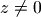 has
distinct -th roots, which are
equidistant points on a circle with radius 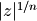, centered around the
origin. A specific root may be selected using the optional index
 . The roots are indexed counterclockwise, starting with
. The roots are indexed counterclockwise, starting with  for the root
closest to the positive real half-axis.
for the root
closest to the positive real half-axis.The
root is the so-called principal -th root, often denoted by
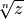 or 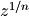, and also given by 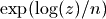. If is
a positive real number, the principal root is just the unique positive
-th root of . Under some circumstances, non-principal real roots exist:
for positive real , even, there is a negative root given by 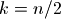;
for negative real , odd, there is a negative root given by 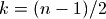.To obtain all roots with a simple expression, use [root(z,n,k) for k in range(n)].
An important special case, root(1, n, k) returns the
-th -th root of
unity, 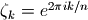. Alternatively, unitroots()
provides a slightly more convenient way to obtain the roots of unity,
including the option to compute only the primitive roots of unity.Both
and should be integers; outside of range(n) will be
reduced modulo . If is negative, 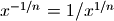 (or
the equivalent reciprocal for a non-principal root with 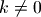) is computed.root() is implemented to use Newton’s method for small
. At high precision, this makes  not much more
expensive than the regular exponentiation,
not much more
expensive than the regular exponentiation,  . For very large
, nthroot() falls back to use the exponential function.
. For very large
, nthroot() falls back to use the exponential function.Examples
nthroot()/root() is faster and more accurate than raising to a floating-point fraction:
>>> from mpmath import * >>> mp.dps = 15; mp.pretty = False >>> 16807 ** (mpf(1)/5) mpf('7.0000000000000009') >>> root(16807, 5) mpf('7.0') >>> nthroot(16807, 5) # Alias mpf('7.0')
A high-precision root:
>>> mp.dps = 50; mp.pretty = True >>> nthroot(10, 5) 1.584893192461113485202101373391507013269442133825 >>> nthroot(10, 5) ** 5 10.0
Computing principal and non-principal square and cube roots:
>>> mp.dps = 15 >>> root(10, 2) 3.16227766016838 >>> root(10, 2, 1) -3.16227766016838 >>> root(-10, 3) (1.07721734501594 + 1.86579517236206j) >>> root(-10, 3, 1) -2.15443469003188 >>> root(-10, 3, 2) (1.07721734501594 - 1.86579517236206j)
All the 7th roots of a complex number:
>>> for r in [root(3+4j, 7, k) for k in range(7)]: ... print("%s %s" % (r, r**7)) ... (1.24747270589553 + 0.166227124177353j) (3.0 + 4.0j) (0.647824911301003 + 1.07895435170559j) (3.0 + 4.0j) (-0.439648254723098 + 1.17920694574172j) (3.0 + 4.0j) (-1.19605731775069 + 0.391492658196305j) (3.0 + 4.0j) (-1.05181082538903 - 0.691023585965793j) (3.0 + 4.0j) (-0.115529328478668 - 1.25318497558335j) (3.0 + 4.0j) (0.907748109144957 - 0.871672518271819j) (3.0 + 4.0j)
Cube roots of unity:
>>> for k in range(3): print(root(1, 3, k)) ... 1.0 (-0.5 + 0.866025403784439j) (-0.5 - 0.866025403784439j)
Some exact high order roots:
>>> root(75**210, 105) 5625.0 >>> root(1, 128, 96) (0.0 - 1.0j) >>> root(4**128, 128, 96) (0.0 - 4.0j)
unitroots()¶
- mpmath.unitroots(n, primitive=False)¶
unitroots(n) returns 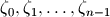, all the distinct
-th roots of unity, as a list. If the option
primitive=True is passed, only the primitive roots are returned.Every
-th root of unity satisfies 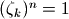. There are distinct
roots for each (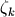 and 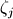 are the same when
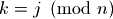), which form a regular polygon with vertices on the unit
circle. They are ordered counterclockwise with increasing , starting
with 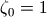.Examples
The roots of unity up to 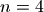:
>>> from mpmath import * >>> mp.dps = 15; mp.pretty = True >>> nprint(unitroots(1)) [1.0] >>> nprint(unitroots(2)) [1.0, -1.0] >>> nprint(unitroots(3)) [1.0, (-0.5 + 0.866025j), (-0.5 - 0.866025j)] >>> nprint(unitroots(4)) [1.0, (0.0 + 1.0j), -1.0, (0.0 - 1.0j)]
Roots of unity form a geometric series that sums to 0:
>>> mp.dps = 50 >>> chop(fsum(unitroots(25))) 0.0
Primitive roots up to :
>>> mp.dps = 15 >>> nprint(unitroots(1, primitive=True)) [1.0] >>> nprint(unitroots(2, primitive=True)) [-1.0] >>> nprint(unitroots(3, primitive=True)) [(-0.5 + 0.866025j), (-0.5 - 0.866025j)] >>> nprint(unitroots(4, primitive=True)) [(0.0 + 1.0j), (0.0 - 1.0j)]
There are only four primitive 12th roots:
>>> nprint(unitroots(12, primitive=True)) [(0.866025 + 0.5j), (-0.866025 + 0.5j), (-0.866025 - 0.5j), (0.866025 - 0.5j)]
The
-th roots of unity form a group, the cyclic group of order .
Any primitive root is a generator for this group, meaning that
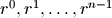 gives the whole set of unit roots (in
some permuted order):>>> for r in unitroots(6): print(r) ... 1.0 (0.5 + 0.866025403784439j) (-0.5 + 0.866025403784439j) -1.0 (-0.5 - 0.866025403784439j) (0.5 - 0.866025403784439j) >>> r = unitroots(6, primitive=True)[1] >>> for k in range(6): print(chop(r**k)) ... 1.0 (0.5 - 0.866025403784439j) (-0.5 - 0.866025403784439j) -1.0 (-0.5 + 0.866025403784438j) (0.5 + 0.866025403784438j)
The number of primitive roots equals the Euler totient function 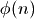:
>>> [len(unitroots(n, primitive=True)) for n in range(1,20)] [1, 1, 2, 2, 4, 2, 6, 4, 6, 4, 10, 4, 12, 6, 8, 8, 16, 6, 18]
Exponentiation¶
exp()¶
- mpmath.exp(x, **kwargs)¶
Computes the exponential function,

For complex numbers, the exponential function also satisfies

Basic examples
Some values of the exponential function:
>>> from mpmath import * >>> mp.dps = 25; mp.pretty = True >>> exp(0) 1.0 >>> exp(1) 2.718281828459045235360287 >>> exp(-1) 0.3678794411714423215955238 >>> exp(inf) +inf >>> exp(-inf) 0.0
Arguments can be arbitrarily large:
>>> exp(10000) 8.806818225662921587261496e+4342 >>> exp(-10000) 1.135483865314736098540939e-4343
Evaluation is supported for interval arguments via mpmath.iv.exp():
>>> iv.dps = 25; iv.pretty = True >>> iv.exp([-inf,0]) [0.0, 1.0] >>> iv.exp([0,1]) [1.0, 2.71828182845904523536028749558]
The exponential function can be evaluated efficiently to arbitrary precision:
>>> mp.dps = 10000 >>> exp(pi) 23.140692632779269005729...8984304016040616
Functional properties
Numerical verification of Euler’s identity for the complex exponential function:
>>> mp.dps = 15 >>> exp(j*pi)+1 (0.0 + 1.22464679914735e-16j) >>> chop(exp(j*pi)+1) 0.0
This recovers the coefficients (reciprocal factorials) in the Maclaurin series expansion of exp:
>>> nprint(taylor(exp, 0, 5)) [1.0, 1.0, 0.5, 0.166667, 0.0416667, 0.00833333]
The exponential function is its own derivative and antiderivative:
>>> exp(pi) 23.1406926327793 >>> diff(exp, pi) 23.1406926327793 >>> quad(exp, [-inf, pi]) 23.1406926327793
The exponential function can be evaluated using various methods, including direct summation of the series, limits, and solving the defining differential equation:
>>> nsum(lambda k: pi**k/fac(k), [0,inf]) 23.1406926327793 >>> limit(lambda k: (1+pi/k)**k, inf) 23.1406926327793 >>> odefun(lambda t, x: x, 0, 1)(pi) 23.1406926327793
power()¶
- mpmath.power(x, y)¶
Converts
and to mpmath numbers and evaluates
 :
:>>> from mpmath import * >>> mp.dps = 30; mp.pretty = True >>> power(2, 0.5) 1.41421356237309504880168872421
This shows the leading few digits of a large Mersenne prime (performing the exact calculation 2**43112609-1 and displaying the result in Python would be very slow):
>>> power(2, 43112609)-1 3.16470269330255923143453723949e+12978188
expj()¶
- mpmath.expj(x, **kwargs)¶
Convenience function for computing 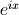:
>>> from mpmath import * >>> mp.dps = 25; mp.pretty = True >>> expj(0) (1.0 + 0.0j) >>> expj(-1) (0.5403023058681397174009366 - 0.8414709848078965066525023j) >>> expj(j) (0.3678794411714423215955238 + 0.0j) >>> expj(1+j) (0.1987661103464129406288032 + 0.3095598756531121984439128j)
expjpi()¶
- mpmath.expjpi(x, **kwargs)¶
Convenience function for computing 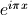. Evaluation is accurate near zeros (see also cospi(), sinpi()):
>>> from mpmath import * >>> mp.dps = 25; mp.pretty = True >>> expjpi(0) (1.0 + 0.0j) >>> expjpi(1) (-1.0 + 0.0j) >>> expjpi(0.5) (0.0 + 1.0j) >>> expjpi(-1) (-1.0 + 0.0j) >>> expjpi(j) (0.04321391826377224977441774 + 0.0j) >>> expjpi(1+j) (-0.04321391826377224977441774 + 0.0j)
expm1()¶
- mpmath.expm1(x)¶
Computes 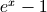, accurately for small
.Unlike the expression exp(x) - 1, expm1(x) does not suffer from potentially catastrophic cancellation:
>>> from mpmath import * >>> mp.dps = 15; mp.pretty = True >>> exp(1e-10)-1; print(expm1(1e-10)) 1.00000008274037e-10 1.00000000005e-10 >>> exp(1e-20)-1; print(expm1(1e-20)) 0.0 1.0e-20 >>> 1/(exp(1e-20)-1) Traceback (most recent call last): ... ZeroDivisionError >>> 1/expm1(1e-20) 1.0e+20
Evaluation works for extremely tiny values:
>>> expm1(0) 0.0 >>> expm1('1e-10000000') 1.0e-10000000
powm1()¶
- mpmath.powm1(x, y)¶
Computes 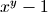, accurately when
 is very close to 1.
is very close to 1.This avoids potentially catastrophic cancellation:
>>> from mpmath import * >>> mp.dps = 15; mp.pretty = True >>> power(0.99999995, 1e-10) - 1 0.0 >>> powm1(0.99999995, 1e-10) -5.00000012791934e-18
Powers exactly equal to 1, and only those powers, yield 0 exactly:
>>> powm1(-j, 4) (0.0 + 0.0j) >>> powm1(3, 0) 0.0 >>> powm1(fadd(-1, 1e-100, exact=True), 4) -4.0e-100
Evaluation works for extremely tiny
:>>> powm1(2, '1e-100000') 6.93147180559945e-100001 >>> powm1(j, '1e-1000') (-1.23370055013617e-2000 + 1.5707963267949e-1000j)
Logarithms¶
log()¶
- mpmath.log(x, b=None)¶
Computes the base-
 logarithm of ,
logarithm of ,  . If is
unspecified, log() computes the natural (base
. If is
unspecified, log() computes the natural (base  ) logarithm
and is equivalent to ln(). In general, the base logarithm
is defined in terms of the natural logarithm as
) logarithm
and is equivalent to ln(). In general, the base logarithm
is defined in terms of the natural logarithm as
 .
.By convention, we take
 .
.The natural logarithm is real if
 and complex if
and complex if  or if
is complex. The principal branch of the complex logarithm is
used, meaning that
or if
is complex. The principal branch of the complex logarithm is
used, meaning that  .
.Examples
Some basic values and limits:
>>> from mpmath import * >>> mp.dps = 15; mp.pretty = True >>> log(1) 0.0 >>> log(2) 0.693147180559945 >>> log(1000,10) 3.0 >>> log(4, 16) 0.5 >>> log(j) (0.0 + 1.5707963267949j) >>> log(-1) (0.0 + 3.14159265358979j) >>> log(0) -inf >>> log(inf) +inf
The natural logarithm is the antiderivative of
 :
:>>> quad(lambda x: 1/x, [1, 5]) 1.6094379124341 >>> log(5) 1.6094379124341 >>> diff(log, 10) 0.1
The Taylor series expansion of the natural logarithm around
 has coefficients
has coefficients  :
:>>> nprint(taylor(log, 1, 7)) [0.0, 1.0, -0.5, 0.333333, -0.25, 0.2, -0.166667, 0.142857]
log() supports arbitrary precision evaluation:
>>> mp.dps = 50 >>> log(pi) 1.1447298858494001741434273513530587116472948129153 >>> log(pi, pi**3) 0.33333333333333333333333333333333333333333333333333 >>> mp.dps = 25 >>> log(3+4j) (1.609437912434100374600759 + 0.9272952180016122324285125j)
ln()¶
- mpmath.ln(x, **kwargs)¶
Computes the base-
logarithm of , . If is
unspecified, log() computes the natural (base ) logarithm
and is equivalent to ln(). In general, the base logarithm
is defined in terms of the natural logarithm as
.By convention, we take
.The natural logarithm is real if
and complex if or if
is complex. The principal branch of the complex logarithm is
used, meaning that .Examples
Some basic values and limits:
>>> from mpmath import * >>> mp.dps = 15; mp.pretty = True >>> log(1) 0.0 >>> log(2) 0.693147180559945 >>> log(1000,10) 3.0 >>> log(4, 16) 0.5 >>> log(j) (0.0 + 1.5707963267949j) >>> log(-1) (0.0 + 3.14159265358979j) >>> log(0) -inf >>> log(inf) +inf
The natural logarithm is the antiderivative of
:>>> quad(lambda x: 1/x, [1, 5]) 1.6094379124341 >>> log(5) 1.6094379124341 >>> diff(log, 10) 0.1
The Taylor series expansion of the natural logarithm around
has coefficients :>>> nprint(taylor(log, 1, 7)) [0.0, 1.0, -0.5, 0.333333, -0.25, 0.2, -0.166667, 0.142857]
log() supports arbitrary precision evaluation:
>>> mp.dps = 50 >>> log(pi) 1.1447298858494001741434273513530587116472948129153 >>> log(pi, pi**3) 0.33333333333333333333333333333333333333333333333333 >>> mp.dps = 25 >>> log(3+4j) (1.609437912434100374600759 + 0.9272952180016122324285125j)
 .
. Lambert W function¶
lambertw()¶
- mpmath.lambertw(z, k=0)¶
The Lambert W function
 is defined as the inverse function
of
is defined as the inverse function
of  . In other words, the value of is such that
. In other words, the value of is such that
 for any complex number .
for any complex number .The Lambert W function is a multivalued function with infinitely many branches 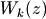, indexed by 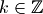. Each branch gives a different solution 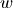 of the equation 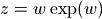. All branches are supported by lambertw():
- lambertw(z) gives the principal solution (branch 0)
- lambertw(z, k) gives the solution on branch
The Lambert W function has two partially real branches: the principal branch (
) is real for real  , and the
, and the
 branch is real for
branch is real for  . All branches except
have a logarithmic singularity at
. All branches except
have a logarithmic singularity at  .
.The definition, implementation and choice of branches is based on [Corless].
Plots
# Branches 0 and -1 of the Lambert W function plot([lambertw, lambda x: lambertw(x,-1)], [-2,2], [-5,2], points=2000)

# Principal branch of the Lambert W function W(z) cplot(lambertw, [-1,1], [-1,1], points=50000)

Basic examples
The Lambert W function is the inverse of
:>>> from mpmath import * >>> mp.dps = 25; mp.pretty = True >>> w = lambertw(1) >>> w 0.5671432904097838729999687 >>> w*exp(w) 1.0
Any branch gives a valid inverse:
>>> w = lambertw(1, k=3) >>> w (-2.853581755409037807206819 + 17.11353553941214591260783j) >>> w = lambertw(1, k=25) >>> w (-5.047020464221569709378686 + 155.4763860949415867162066j) >>> chop(w*exp(w)) 1.0
Applications to equation-solving
The Lambert W function may be used to solve various kinds of equations, such as finding the value of the infinite power tower
 :
:>>> def tower(z, n): ... if n == 0: ... return z ... return z ** tower(z, n-1) ... >>> tower(mpf(0.5), 100) 0.6411857445049859844862005 >>> -lambertw(-log(0.5))/log(0.5) 0.6411857445049859844862005
Properties
The Lambert W function grows roughly like the natural logarithm for large arguments:
>>> lambertw(1000); log(1000) 5.249602852401596227126056 6.907755278982137052053974 >>> lambertw(10**100); log(10**100) 224.8431064451185015393731 230.2585092994045684017991
The principal branch of the Lambert W function has a rational Taylor series expansion around
:>>> nprint(taylor(lambertw, 0, 6), 10) [0.0, 1.0, -1.0, 1.5, -2.666666667, 5.208333333, -10.8]
Some special values and limits are:
>>> lambertw(0) 0.0 >>> lambertw(1) 0.5671432904097838729999687 >>> lambertw(e) 1.0 >>> lambertw(inf) +inf >>> lambertw(0, k=-1) -inf >>> lambertw(0, k=3) -inf >>> lambertw(inf, k=2) (+inf + 12.56637061435917295385057j) >>> lambertw(inf, k=3) (+inf + 18.84955592153875943077586j) >>> lambertw(-inf, k=3) (+inf + 21.9911485751285526692385j)
The
and branches join at  where
where
 for both branches. Since
for both branches. Since  can only be represented
approximately with binary floating-point numbers, evaluating the
Lambert W function at this point only gives
can only be represented
approximately with binary floating-point numbers, evaluating the
Lambert W function at this point only gives  approximately:
approximately:>>> lambertw(-1/e, 0) -0.9999999999998371330228251 >>> lambertw(-1/e, -1) -1.000000000000162866977175
If
happens to round in the negative direction, there might be
a small imaginary part:>>> mp.dps = 15 >>> lambertw(-1/e) (-1.0 + 8.22007971483662e-9j) >>> lambertw(-1/e+eps) -0.999999966242188
References
Arithmetic-geometric mean¶
agm()¶
- mpmath.agm(a, b=1)¶
agm(a, b) computes the arithmetic-geometric mean of
 and
, defined as the limit of the following iteration:
and
, defined as the limit of the following iteration:
This function can be called with a single argument, computing
 .
.Examples
It is a well-known theorem that the geometric mean of two distinct positive numbers is less than the arithmetic mean. It follows that the arithmetic-geometric mean lies between the two means:
>>> from mpmath import * >>> mp.dps = 15; mp.pretty = True >>> a = mpf(3) >>> b = mpf(4) >>> sqrt(a*b) 3.46410161513775 >>> agm(a,b) 3.48202767635957 >>> (a+b)/2 3.5
The arithmetic-geometric mean is scale-invariant:
>>> agm(10*e, 10*pi) 29.261085515723 >>> 10*agm(e, pi) 29.261085515723
As an order-of-magnitude estimate,
 for large :
for large :>>> agm(10**10) 643448704.760133 >>> agm(10**50) 1.34814309345871e+48
For tiny
,  :
:>>> agm('0.01') 0.262166887202249 >>> -pi/2/log('0.0025') 0.262172347753122
The arithmetic-geometric mean can also be computed for complex numbers:
>>> agm(3, 2+j) (2.51055133276184 + 0.547394054060638j)
The AGM iteration converges very quickly (each step doubles the number of correct digits), so agm() supports efficient high-precision evaluation:
>>> mp.dps = 10000 >>> a = agm(1,2) >>> str(a)[-10:] '1679581912'
Mathematical relations
The arithmetic-geometric mean may be used to evaluate the following two parametric definite integrals:

We have:
>>> mp.dps = 15 >>> a = 3 >>> b = 4 >>> f1 = lambda x: ((x**2+a**2)*(x**2+b**2))**-0.5 >>> f2 = lambda x: ((a*cos(x))**2 + (b*sin(x))**2)**-0.5 >>> quad(f1, [0, inf]) 0.451115405388492 >>> quad(f2, [0, pi/2]) 0.451115405388492 >>> pi/(2*agm(a,b)) 0.451115405388492
A formula for
 :
:>>> gamma(0.25) 3.62560990822191 >>> sqrt(2*sqrt(2*pi**3)/agm(1,sqrt(2))) 3.62560990822191
Possible issues
The branch cut chosen for complex
and is somewhat
arbitrary.